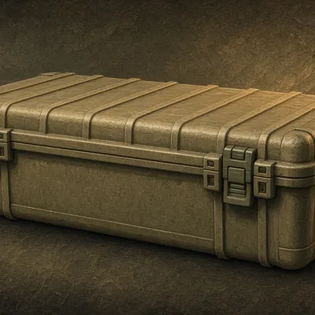
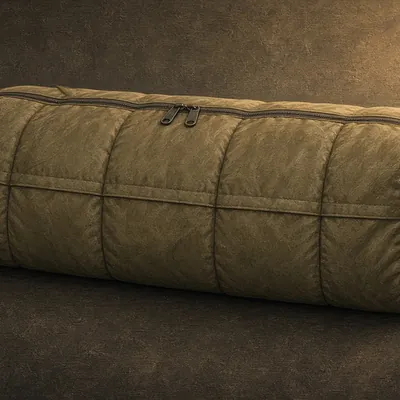
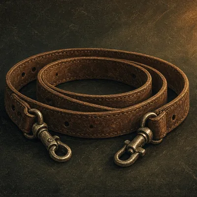
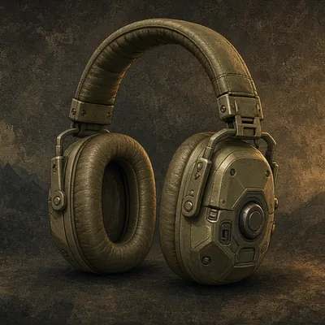
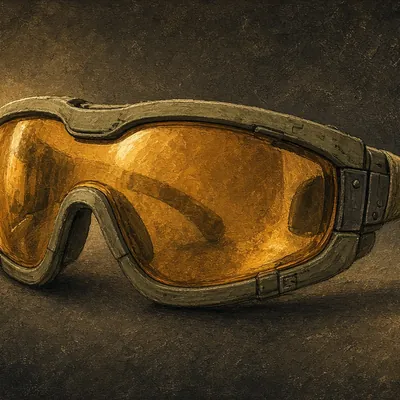

Firearm Accessories
Cases, slings, shooting sticks, cleaning and ear protection. Accessories only.
Home / Shop / Firearm Accessories
Disclosure: We may earn a commission from links on this site, at no extra cost to you. As an Amazon Associate I earn from qualifying purchases. Links open each store's own search. We never show prices, ratings or reviews, so check details on the retailer's site. Shop top-rated → opens the store's search sorted by customer rating. Details
🎯 Firearm Accessories

CategoryHard rifle case
Lockable hard cases are generally required for flying with firearms. Always confirm the airline's own rules.

CategorySoft rifle case
Padded protection for truck and ATV travel.

CategoryRifle sling
A good sling frees your hands on long walks and can steady a shot.
Shooting sticks
Standard on African safaris and great everywhere else. Practice off them before your trip.
Bipod
Steadies prone and bench shots. Check that it fits your rifle's mounting point.
 Category
CategoryGun cleaning kit
A caliber-specific rod or pull-through, patches, solvent and oil.

CategoryEar protection
Electronic muffs let you hear normal sounds while blocking gunshots. Wear them every time you practice.

CategoryShooting glasses
Eye protection at the range, and in the duck blind too.
Gun safe / lockbox
Secure storage at home and on the road.
Read before you buy
Other departments
Optics · Clothing & Boots · Tree Stands & Blinds · Calls & Decoys · Scent Control · Archery · Game Processing · Camp & Lodging Gear · Safety · Electronics & Trail Cams · Dog Gear
Item images are illustrations, not the exact products sold.